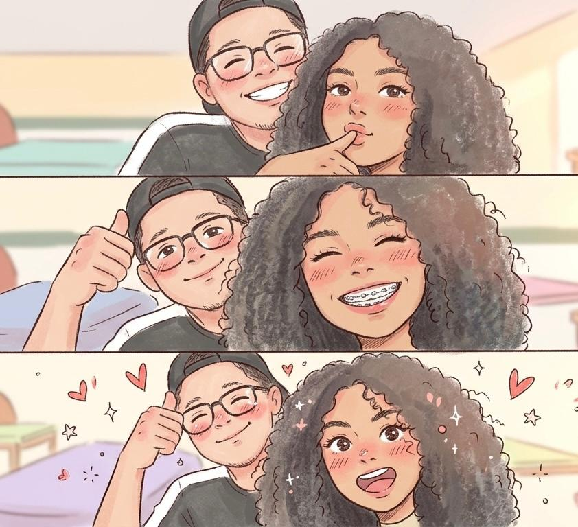
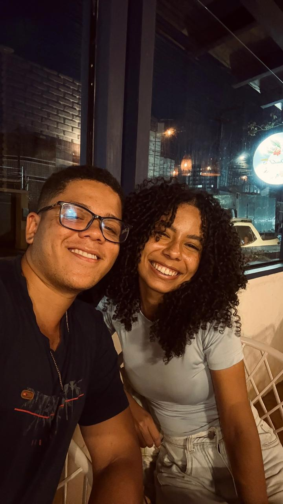
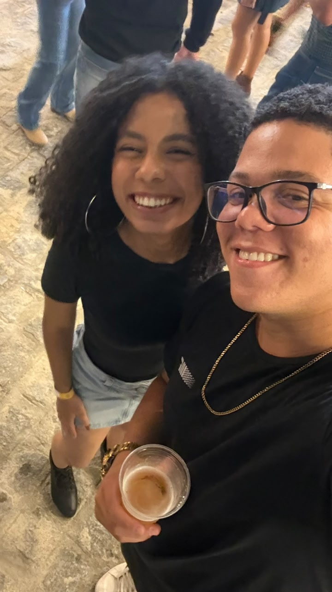
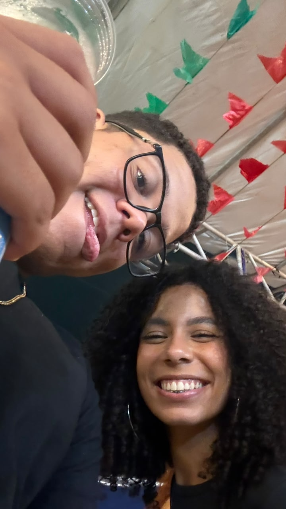

Um pequeno presente feito especialmente para você.
É engraçado pensar que uma simples mensagem enviada no final do ano poderia mudar tanta coisa.
Hoje, quando releio nossas primeiras conversas, sinto um pouco de vergonha de algumas delas, mas sinto muito mais gratidão por ter tido coragem de mandar aquela mensagem.
Foi ali que começou uma história que eu jamais imaginaria viver.
Eu não consigo negar que queria ter feito algo muito mais especial para você. Mas, ao mesmo tempo, nunca vou esquecer seu rosto e o seu sorriso naquele momento. Acho que isso foi mais do que suficiente para me fazer esquecer qualquer preocupação ou expectativa que eu tinha para aquele dia.
Foi o "sim" mais importante que eu já ouvi até hoje. E, sendo sincero, espero ouvir outro em um futuro não tão distante, quando eu fizer o pedido de casamento kkkkk.
Há pouco mais de três meses, eu escolhi viver essa história com você. Hoje, tenho certeza de que foi uma das melhores escolhas que já fiz.
E me desculpe se nada disso é tão romântico quanto poderia ser. Foi algo simples, mas feito de coração. Só espero continuar vendo o mesmo sorriso que vi naquele dia por muitos e muitos anos.




Se você chegou até aqui, parabéns por sobreviver a toda essa leitura kkkkk.
Mas falando sério, obrigado por fazer parte de tudo isso e por construir essa história comigo. E, para encerrar, preparei uma pequena surpresa para você.
Clique no botão abaixo para descobrir o que é.
Obrigado por fazer parte da minha vida. Que essa seja apenas uma das muitas páginas da nossa história.